Overview
Three years ago, my brother and I set out to build a 6 Degrees of Freedom (6DOF) robot arm to learn more about engineering. This was a huge step up from anything we had worked on before: at the time, the only engineering project I had under my belt was the Tortoise Tipper 3000 (a first-year engineering class project). Today, we have a working 6DOF robot arm with our own custom design, electronics, and firmware.
Design Goals & Constraints
- Engineering experience: Since this was one of our first personal projects, we just wanted to learn as much about engineering as we could.
- Custom Algorithms: We had to write all the algorithms (inverse kinematics, motion control, etc.) ourselves, with no copy-pasting of open-source code.
- Product Design: The robot must be aesthetically pleasing.
My Role
My role was Electrical & Firmware Engineer, so I designed all the PCBs and wrote the firmware that runs on them.
Design Evolution
V1
We decided to go with a centralized architecture like most DIY robots: a main microcontroller (the robot controller) is responsible for both planning the path and generating the step pulses for each motor. That's a lot of responsibility for one microcontroller, so it has to be fast. For that reason, we went with the Teensy 4.1. It was the fastest microcontroller we could find that could be programmed using Arduino.
Since this is a 6DOF robot arm, we need six motors. We went with stepper motors because they're cheap. Unlike BLDC servos, they don't take a lot of work to get running. They work great in open-loop mode, so all we need is a stepper motor driver to get them moving. We used one NEMA 23 for Joint 2 and five NEMA 17s for the rest of the joints. For the stepper drivers, we chose the MKS SERVO42C (for NEMA 17) and the MKS SERVO57C (for NEMA 23). Both support closed-loop control, but we ran them in open-loop mode because closed-loop was unreliable for us.
Since we ran the steppers open loop, they don't know where they are on startup, so we needed a way to find a known starting position. For this, we used limit switches for homing.
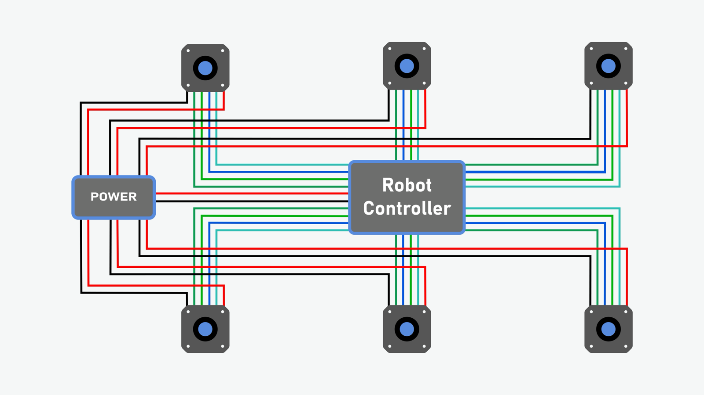
V1 Issues
- The first major issue was that the belt-driven NEMA 17 on Joint 3 couldn't provide enough torque to move the joint.
- The second issue was with the NEMA 23 stepper motor driver: whenever we unplugged the Teensy from the computer, the motor would make erratic movements, which ended up destroying our limit switches.
- The third issue was that we kept blowing up Teensy boards. Wiring mistakes cost us two of them, and at $40 each, that wasn't sustainable.
V2
We kept the same centralized approach, but made some changes to fix the issues we ran into with V1:
- We upgraded Joint 3 from a NEMA 17 to a NEMA 23 and removed the belt so the motor drives the joint directly.
- We replaced the MKS SERVO57C on Joint 2 with a DM542, and used a second DM542 for the new NEMA 23 on Joint 3.
- We also swapped out the Teensy for an ESP32. Even though it isn't as fast, it is fast enough, and most importantly, it is significantly cheaper.
- We added support for proximity sensors and used them on the high-torque joints for contactless homing, so a runaway joint can't crush a limit switch.
- I designed my first PCB to replace our perfboard, which also got rid of a lot of the wiring issues from V1.
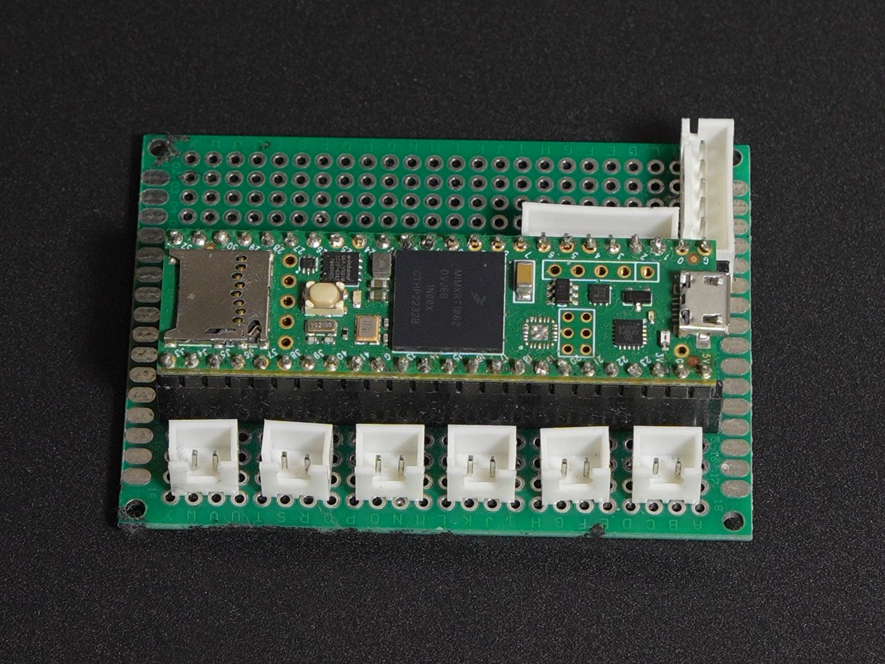
V1 · Teensy 4.1 on perfboard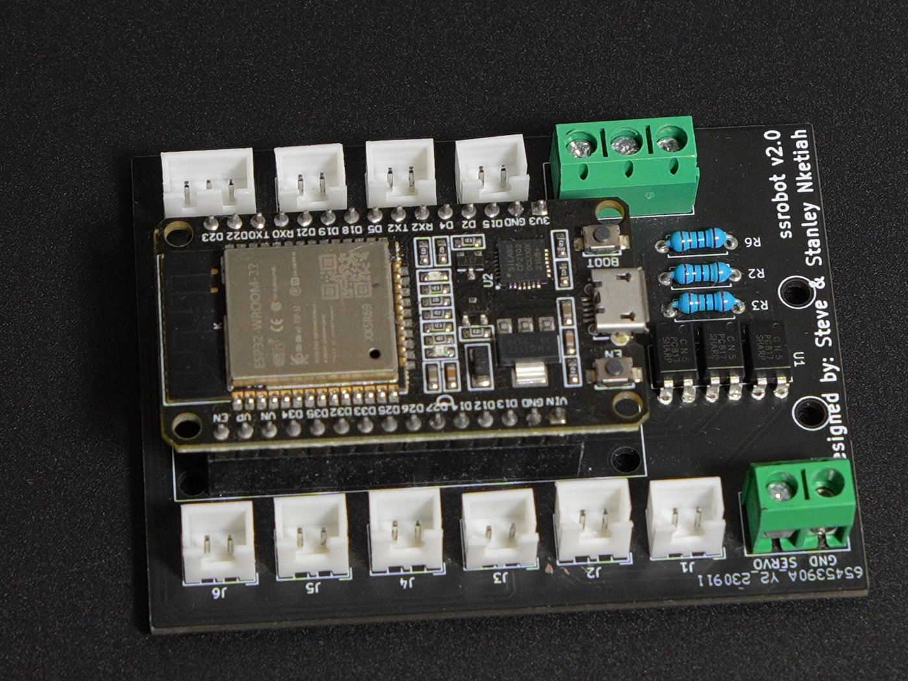
V2 · ESP32 on my first PCBV3
At this point, the robot was working perfectly well, but we knew we could do better. The first major area to improve was the wiring. Because of the centralized architecture, a lot of wires were running to and from the robot controller. To fix this, we switched to using a CAN FD bus to control the stepper motors. This allows us to decouple step pulse generation from the robot controller: the robot controller is only in charge of planning paths, while the motor controllers handle stepping the motors and homing. Each motor now just needs power and a CAN FD connection instead of its own bundle of signal wires running back to the robot controller.
This meant we needed new motor controllers. We had two options: build our own or buy off-the-shelf CAN FD motor controllers. Since the goal of this project was to learn, we decided to build the whole system ourselves: robot controller and motor controllers.
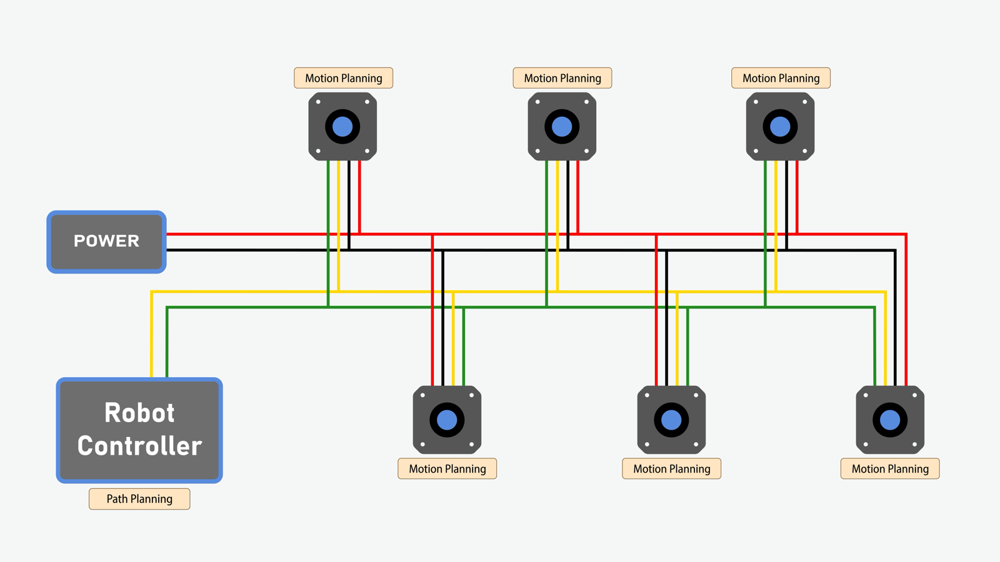
Design Choices: Robot Controller PCB Design
- MCU: STM32H7R7. We picked it because it's fast, has an LTDC peripheral for driving the LCD, and isn't too expensive. The catch is that it only has 64 kB of flash and about 600 kB of RAM. The frame buffer for our LCD screen needs about 1.2 MB of RAM, and since we want to double-buffer, we need twice that. So we added 8 MB of external SDRAM. On top of that, 64 kB is nowhere near enough to store our application code, so I also added 8 MB of external flash.
- USB-to-serial interface: for sending commands to the robot from a computer.
- E-STOP button (optocoupler-isolated)
- LCD Screen: for a touchscreen interface on the robot
- CAN FD support
- EEPROM for storing config data
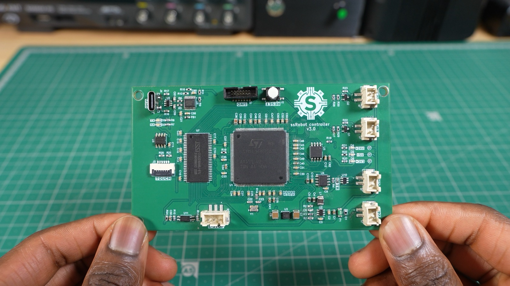
Design Choices: Motor controllers
I designed two motor controllers: one for the NEMA 23s and one for the NEMA 17s.
- MCU: STM32G431. It's cheap, fast, and has a built-in CAN FD controller.
- Stepper motor driver chip:
- NEMA 17: TMC2209 because it can handle up to 2 A RMS
- NEMA 23: TMC5160 because it drives external FETs, so we could size them to handle the current requirements of the NEMA 23s (3 A)
- Optocoupler circuitry: isolates the limit switch inputs used for homing
- Magnetic encoder: we included an A1333 encoder for closed-loop control, but haven't implemented it yet.
More details on the motor controller page.
Robot Controller Issues
There was really only one issue with this revision: the LCD screen wasn't working. For controlling the LCD touchscreen, the STM32H7R7 has an LTDC peripheral. This peripheral fetches the frame buffer data (the image displayed on the screen) from RAM, which in our case was the external SDRAM, and sends it to the display. The problem was that it couldn't transfer the data fast enough: the LTDC kept setting its FIFO underrun flag when reading from the SDRAM.
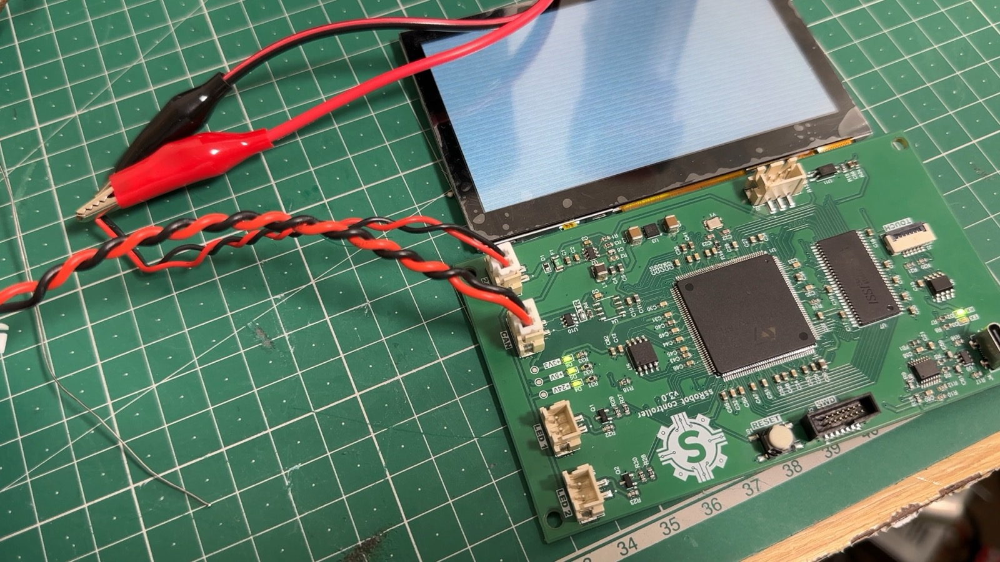
At the time, I assumed the SDRAM was just too slow, so I switched to faster memory in the next revision. In hindsight, it was a firmware issue (skill issue on my part). ST's LTDC application note (AN4861) explains that if the frame buffer line width isn't aligned to the bus burst size, the LTDC splits its burst reads into single accesses, which kills bandwidth on high-latency memory like SDRAM. Setting the pitch correctly would likely have fixed it in firmware.
V3.1
The goal of this revision was to get the touchscreen display actually working. We got around the FIFO underrun by switching to faster memory: HyperRAM. HyperRAM runs at 200 MHz DDR on an 8-bit bus, compared to the old SDRAM's 16-bit bus at 100 MHz. That's half the data lines for twice the peak throughput (400 MB/s vs. 200 MB/s). In hindsight, the alignment fix described above may have been enough on its own. The PCB design was quite challenging, since I had to length-match traces to keep the timing right and route them with controlled impedance.
I successfully got the touchscreen working, but I accidentally swapped the USB data lines going into the USB-to-serial converter. That meant I couldn't communicate with the computer, so I had to stick with V3 for robot development.
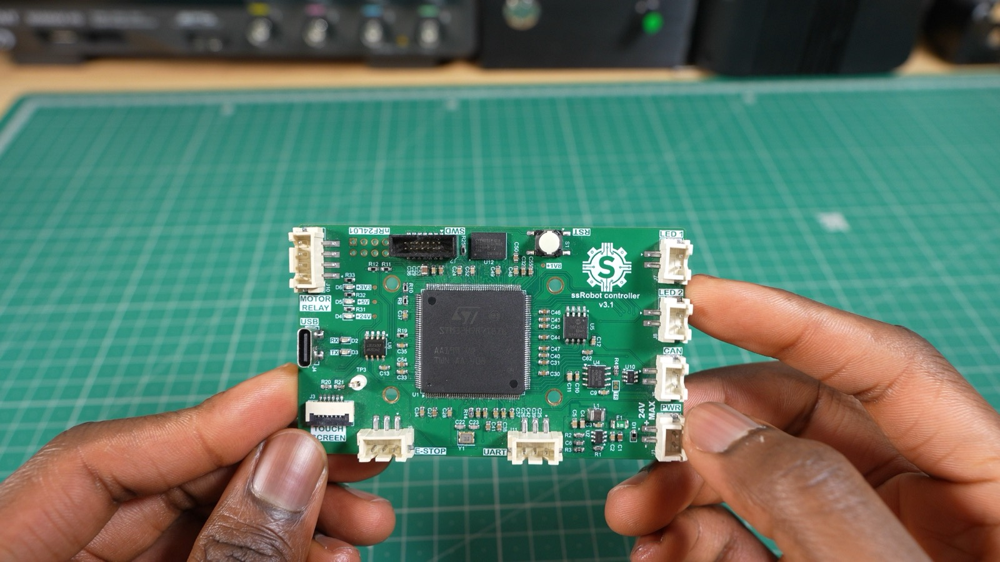
V3.1 PCB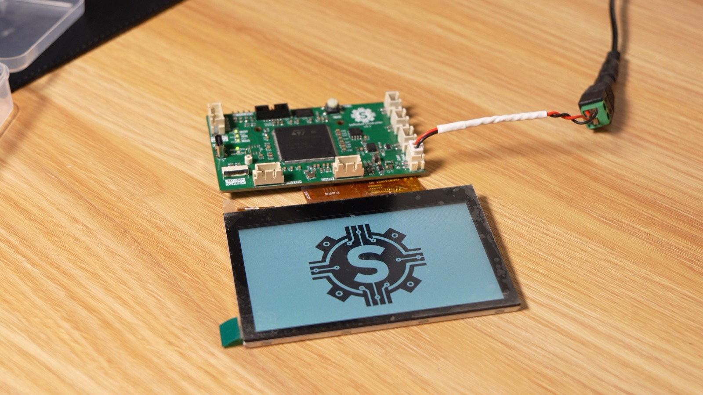
The touchscreen workingV4
This revision fixed the issues from V3.1 and added some extra functionality to the robot controller:
- We added an STM32WB05KZV for Bluetooth connectivity. It communicates with the main STM32H7R7 controller via UART.
- We switched from a USB-to-serial converter to a direct USB connection to the MCU, which increases communication speed. It also eliminates the USB-to-serial converter entirely, along with the routing mistake that broke V3.1.
- We also added a buzzer for audio feedback.
- We added an SD card for storing robot programs, and moved config data over to it from the EEPROM.
- V4 has been assembled and is currently being tested.
Force-Controlled Gripper
We also designed a force-controlled gripper. The idea is to control the grip force so it can handle both hard and delicate objects. It can pick up anything from something as fragile as a potato chip to something as solid as a 3D-printed cube.
Read more on the gripper page.
Forward and Inverse Kinematics
To figure out where the end effector is based on the joint angles, we use forward kinematics, specifically the Denavit-Hartenberg method. However, that alone isn't very useful for us. We need to be able to specify a position in space and have the robot move there. To do this, we use inverse kinematics (the geometric method). We break the robot into triangles and use trigonometry and vectors to solve for each joint angle needed to reach the target position and orientation.
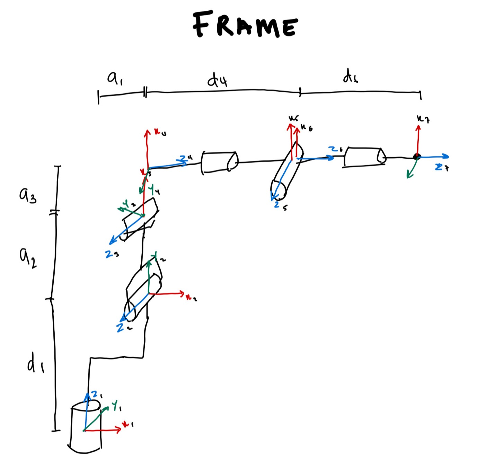
Robot frame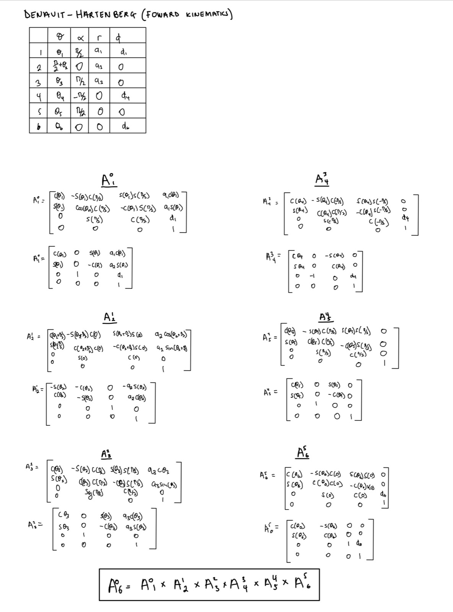
Forward kinematics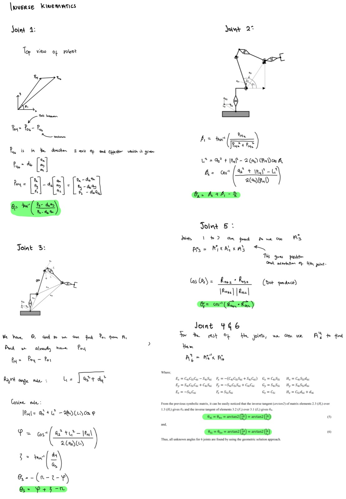
Inverse kinematicsS-Curve Velocity Profile
To get the robot to follow whatever path we specify, we break the path into small segments and interpolate between them. To make sure the motion is smooth, we implemented an S-curve velocity profile. S-curves ramp acceleration up and down gradually instead of switching it instantly, which reduces mechanical stress and prevents jerky motion.
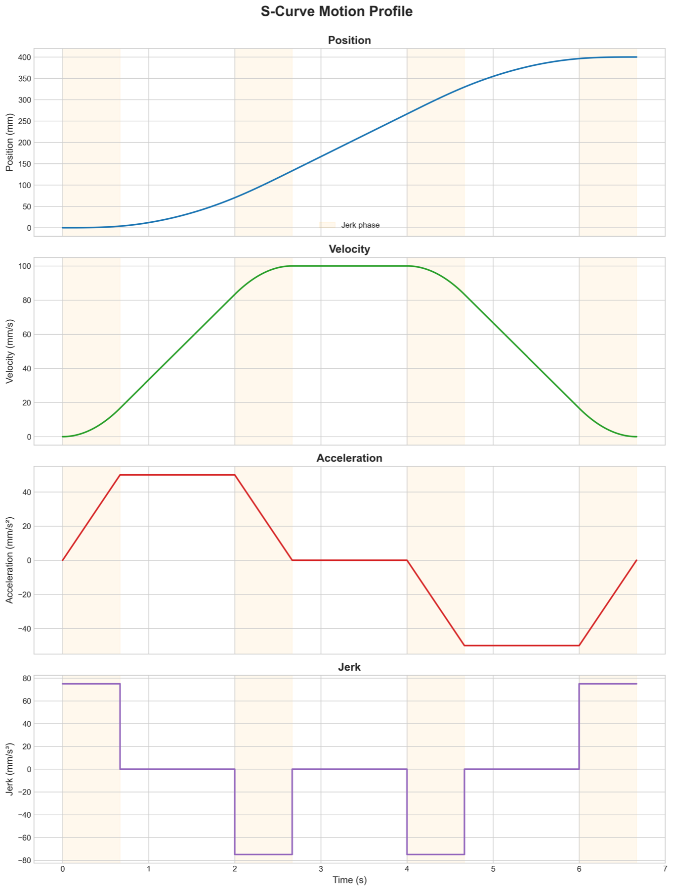
Motor Synchronization
With the switch to CAN FD, the first thing we had to figure out was how to actually control the motors. This wasn't a problem with the original architecture, since a single MCU generated the step pulses for all six motors. With CAN FD, we can't just carry this over: the bus is too slow, with too much latency variation, to send individual step pulses to each motor. Instead, we send position commands and let the motor controllers handle step generation. This creates two major challenges: first, we have to make sure the motor controllers never run out of position commands before new ones arrive, and second, we have to make sure the clocks on all the nodes are synced. Each position command is tagged with the time it should execute, so if the clocks drift apart, the joints fall out of step with each other and the arm stops following the planned path.
The first issue is simple: we implemented a command queue on each motor controller, which the robot controller keeps topped up so it never runs dry. The second is more difficult, so we implemented our own version of the IEEE 1588 Precision Time Protocol (PTP) over the CAN FD bus. Our solution uses the CAN FD peripheral's hardware timestamping to sync the clocks and compensate for slight frequency differences between them.
Here's how it works:
- The robot controller broadcasts a sync message on the CAN FD bus
- Motor controllers use hardware timestamping to record the Start of Frame (SOF) time (T2) with microsecond precision
- The robot controller sends a follow-up message containing its timer value at the moment of SOF transmission (T1)
- Each motor controller calculates the offset between its local clock and the robot controller's clock, then adjusts accordingly
- Each motor controller also calculates a frequency multiplier to correct for the slight difference in clock speed.
To test how well the two timers stay synchronized, I connected a GPIO pin on both the robot controller and a motor controller to an oscilloscope and toggled them at the same scheduled time. I tested four conditions, with a sync command sent every second where applicable. Below are the results.
| Condition | Drift rate | Time error | Behavior |
|---|---|---|---|
| No correction | 16.5 ppm | 195 µs after 11.9 s | Unbounded, linear |
| Offset only (1 s sync) | 16.5 ppm between syncs | 16.5 µs peak | Bounded sawtooth |
| Offset + rate (1 s sync) | 0.04 ppm | ~1–2 µs observed | Bounded, quantization-limited |
| Rate only, one sync | 0.04 ppm residual | 9.5 µs after 256 s | Unbounded, ~444× slower |
Rate correction reduced the drift rate from 16.471 ppm to 0.0371 ppm, an improvement of roughly 444×. An independent cross-check using the raw T1 − T2 offset gave 16.448 ppm, agreeing with the rate estimator to within 0.14% and confirming it tracks the real crystal difference. The remaining ~1–2 µs is consistent with the quantization limit of two unsynchronized 1 MHz counters (up to ±1 µs combined) plus jitter from toggling the GPIOs in software using interrupts. Further improvement would need a faster timebase, and a hardware timer output to toggle the GPIO for the measurement, rather than a better estimator.
Robot Serial Interface
The robot communicates with the host computer over a serial interface (UART via a USB-to-serial converter on V3, native USB on V4) that handles motion commands, configuration changes, and status reporting. It also streams real-time log output, which has been helpful during development and debugging.
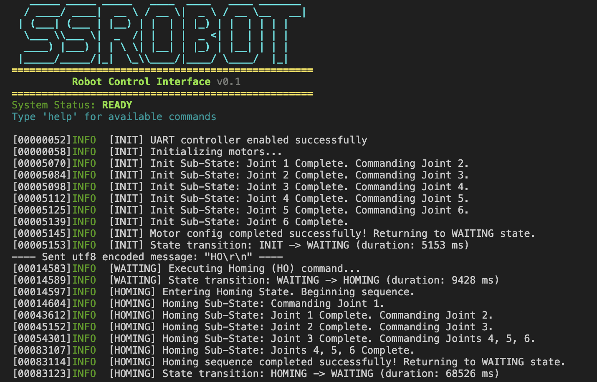